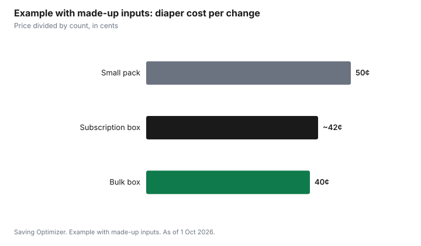

Kids · Canada
Diapers in Canada: Cloth vs Disposable, Bulk vs Subscription, Cost Per Change
In Canada, the simplest way to compare diapers is cost per change: the price divided by the number of diapers. That one number lets you compare a store-brand jumbo pack, a name-brand bulk box, a subscription and cloth diapers on equal terms. Disposable store brands and bulk boxes often lower the cost per change, subscriptions only help when their per-diaper price beats the flyer, and cloth diapers trade an upfront cost and laundry time for a lower running cost, especially if they are reused for a second child.
Key takeaways
- Cost per change = price ÷ count. Use it for every pack, box and subscription.
- Babies change sizes. Buy bulk in the current size only when you are confident it will still fit.
- Subscriptions are worth it only when the delivered per-diaper price beats the sale price at stores you already visit.
- Cloth: add up the kit, the laundry (water, energy, detergent) and your time, then subtract any resale value.
- Example with made-up inputs: a 100-count box at $40 is 40¢ a change; a 30-count pack at $15 is 50¢.
Work out the cost per change
Shelf tags in Canada often show a unit price, but it can be per diaper, per 100 or per pack, so do the division yourself. Write down the price and count for the brands and sizes you use, and compare the sale price, not the regular price. Loyalty points and price matching can lower the number further; count them only if you would shop there anyway.
Disposable options compared
| Option | Why it can save | Watch for |
|---|---|---|
| Store brand | Often lower price per change | Fit and leaks vary by baby; try a small pack first |
| Bulk box | Lower price per diaper at many stores | Your baby may outgrow the size before the box is finished |
| Subscription | Convenience and a subscription discount | Compare the delivered price per diaper to flyer sales; easy to forget to adjust size |
| Warehouse club | Large counts | Membership cost; very large boxes and size changes |
Unopened packs in the wrong size can often be returned or exchanged; check the store's return policy and keep receipts. A diaper that leaks costs more than a cheaper one that works, since you also pay for the extra laundry and clothes.
Cloth diapers: what to count
Cloth diapers have a higher upfront cost and a lower ongoing cost. To compare fairly, count the kit (covers, inserts or all-in-ones, wipes, wet bags), the extra laundry loads, detergent, and your time. Cloth can be reused for a later child and resold. Some families use cloth at home and disposables for daycare, travel or overnight. Ask your daycare whether it accepts cloth.
Secondhand cloth diapers can lower the kit cost; check elastic and waterproof layers, and follow the manufacturer's washing directions. Some municipalities have offered cloth diaper rebates; check your city's waste or environment pages.
Sales tax on diapers
Tax rules for diapers vary by province. In Ontario, children's diapers, including cloth and disposable diapers, inserts, liners and training pants, qualify for a point-of-sale rebate of the 8% provincial part of the HST, so you normally pay only the 5% federal part. Some other HST provinces have similar point-of-sale rebates on certain children's goods; check your province. Compare shelf prices before tax, but remember that tax treatment affects the final cost per change in each province.
Step by step: setting a diaper budget
- Track one week: count changes per day for your baby's current age.
- Work out a monthly count: changes per day × 30.
- Find your current cost per change from your last purchase.
- Multiply for a monthly budget, then check it against a sale price per change.
- Set a stock-up price: the lowest cost per change you have seen in the current size.
- Buy one size ahead only in small amounts, as growth is hard to predict.
Cloth diaper set-ups compared
| Type | How it works | Trade-off |
|---|---|---|
| Prefolds or flats with covers | Fabric folded into a waterproof cover | Lowest cost; more folding |
| Fitted with covers | Shaped absorbent diaper plus cover | Good for nights; two layers |
| Waterproof shell with an insert stuffed inside | Easy to use; stuffing after each wash | |
| All-in-one | Absorbent layer sewn into the cover | Simplest; slower drying and higher cost |
Count laundry realistically. Many families wash cloth diapers every two or three days, so a full set needs enough diapers to cover that gap plus drying time. Follow the manufacturer's washing instructions to keep warranties and absorbency.
Help if money is tight
Diaper banks and community organizations in many Canadian cities give diapers to families in need; ask your public health nurse, family resource centre or food bank. Check that you are receiving the Canada Child Benefit and any provincial child benefit, which you apply for after the birth.
Common mistakes
- Stocking up on newborn size before the birth; many babies outgrow it quickly.
- Comparing pack prices instead of cost per change.
- Keeping a subscription on the wrong size or frequency.
- Buying a full cloth kit before trying a few types.
Example with made-up inputs: cost per change
These numbers are an example with made-up inputs, not current prices. Compare the cost per change for three disposable choices.
| Choice | Price | Count | Cost per change |
|---|---|---|---|
| Small pack | $15 | 30 | 50¢ |
| Bulk box | $40 | 100 | 40¢ |
| Subscription box | $38 | 90 | about 42¢ |
At 8 changes a day, the gap between 50¢ and 40¢ is 80¢ a day, or about $24 over 30 days, again with made-up inputs.

Sources
- Store return policies for unopened products vary; check with the retailer, as of 1 Oct 2026.
- Municipal cloth diaper rebates, where offered, are set by each city; check your municipality, as of 1 Oct 2026.
- Ontario Ministry of Finance, HST point-of-sale rebates on children's goods including diapers, as of 1 Oct 2026.
- The prices, counts and changes per day in the example table and chart are made-up inputs.
Frequently asked questions
How do I compare diaper prices in Canada?
Divide the price by the number of diapers to get the cost per change. Use the sale price and compare the same size across store brands, name brands, bulk boxes and subscriptions.
Are diaper subscriptions cheaper?
Only when the delivered per-diaper price beats the sale prices at stores you already visit. Remember to change the size as your baby grows.
Is buying diapers in bulk a good idea?
It can lower the cost per change, but babies outgrow sizes. Buy bulk in the current size when you are confident it will still fit, and keep receipts in case the store accepts exchanges of unopened packs.
Are cloth diapers cheaper than disposables?
They can be over time, but count the kit, laundry, detergent and your time, and subtract resale value. Reusing them for a second child improves the math.
Can I use cloth diapers at daycare?
Some daycares accept cloth and some do not. Ask your provider before buying a full kit.
Do I pay HST on diapers in Ontario?
Children's diapers in Ontario qualify for a point-of-sale rebate of the 8% provincial part of the HST, so you normally pay only the 5% federal part. Other provinces have their own rules.
How many cloth diapers do I need?
Enough to cover the time between washes, often two or three days, plus drying time. Try a few types before buying a full set.
Researched and drafted with AI assistance and fact-checked against official Canadian sources. How we create content.
Disclosure: Diaper brands, subscriptions and stores are described as offer types; none is named or ranked. Saving Optimizer may earn a commission if a partner link is added later; no partnership is claimed. Education only.